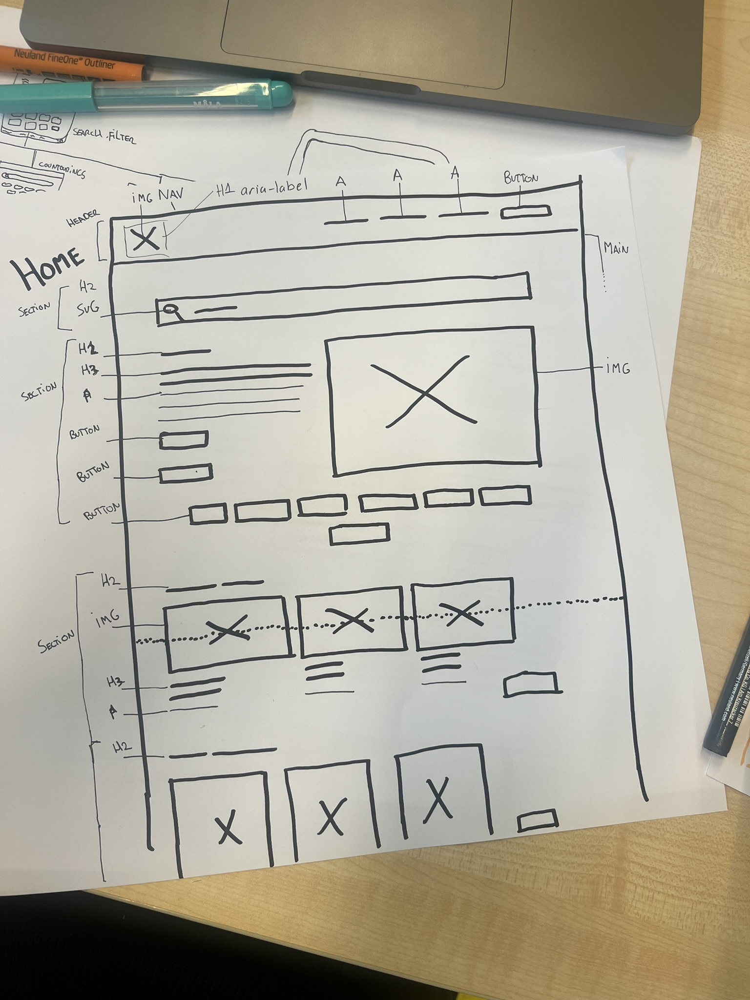
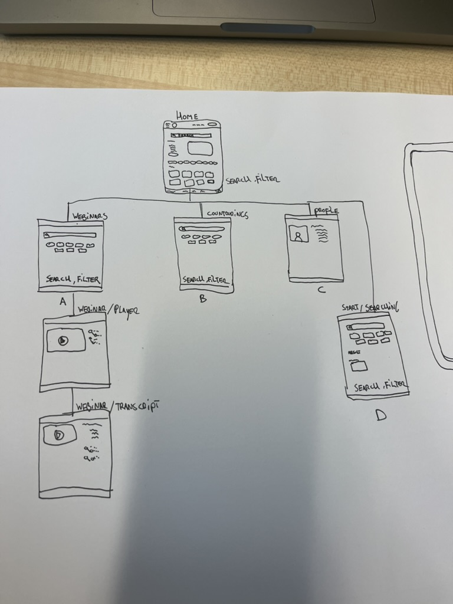
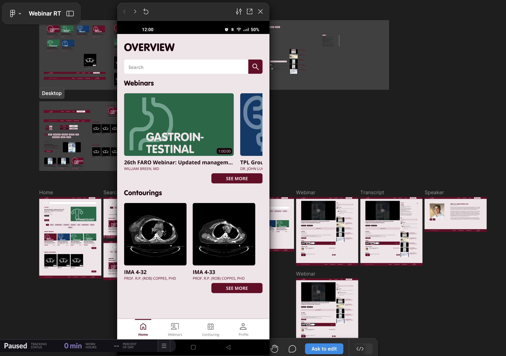

23-09-2024
Wat heb je vandaag gedaan?
Vandaag heb ik een project gekozen voor sprint 2. Ik heb gekozen voor Oncollaboration, dat is een ontwerp voor een online platform voor samenwerking en kennisdeling tussen Indoneschische en Nederlandse radiotherapeuten.
Oncollaboration is het afstudeerwerk van oud-CMD student Sergio Eijben. Sergio is in opdracht van radiotherapeute Judi van Diessen van het Antoni van Leeuwenhoek ziekenhuis afgestudeerd op de vraag over hoe de samenwerking en kennisdeling tussen Indoneschische en Nederlandse radiotherapeuten te verbeteren.
Onze opdracht is dan om op basis van het aangeleverde ontwerp het online platform Oncollabration te ontwikkelen.Ik heb gekozen om een website te maken voor het Antoni van Leeuwenhoek ziekenhuis in Amsterdam om
kennis op het gebied van radiotherapie te delen met de Indonesische ziekenhuizen. De opdrachtgever zelf hebben we vandaag al gesproken en vragen aan
gesteld over het project, ook hebben we een briefing en debriefing gemaakt.
Noem drie dingen die je vandaag hebt geleerd?
Briefing en debriefing maken, communiceren met een opdrachtgever en bekijken hoe een Figma design voor een website eruit moet komen te zien.
Formuleer twee leervragen over wat je deze week wil leren?
Hoe maak ik aan de hand van een Figma bestand een basisstructuur met HTML? Hoe zet ik deze basisstrucuur om tot een goed uitziende website met CSS?
Debriefing
25-09-2024
Documenteer wat je vandaag hebt gedaan. Voeg links naar voorbeelden, bronnen en bijvoorbeeld issues met schetsen toe.
We zijn de dag begonnen met tekenles. Daarna heb ik een wireframe, een breakdown schets en een sitemap aan de hand van het Figma design gemaakt. Vandaag hebben we ook kennis gemaakt met iemand van ons mentorteam. Ik had wat vragen over de HTML basisstructuur van mijn website en de mentor heeft me daar goed mee geholpen en ook wat algemene tips gegeven.
Noem drie dingen die je vandaag hebt geleerd.
Ik heb geleerd dat ik een section moet gebuiken inplaats van een div. Ook heb ik geleerd hoe je een wireframe en wireflow moet schetsen. Verder heb ik geleerd hoe je een header en/of footer laat verdwijnen met media queries.
Schrijf op wat je nu gaat doen.
Nu ga ik beginnen met de basisstructuur maken van de website in HTML aan de hand van de schetsen die ik gemaakt heb en het Figma design die we hebben gekregen.



27-09-2024
Documenteer wat je vandaag hebt gedaan. Voeg links naar voorbeelden, bronnen en bijvoorbeeld issues met schetsen toe.
Vandaag hebben we in groepjes van twee andere groepjes hun HTML bestand gereviewt en via issues op Github feedback gegeven. Zelf heb ik ook feedback ontvangen op mijn HTML bestand en heb mijn code wat aangepast door de feedback.
Stel jezelf 3 vragen over wat je hebt geleerd over HTML
Waarom een Section inplaats van een Div? Hoe verschijnen een Header en Footer vanaf bepaalde hoeveelheden pixels? Hoe maak je een navigatie Footer?
30-09-2024
Documenteer kort wat je vandaag hebt gedaan.
Ik heb vandaag geoefend met verschillende display varianten zoals Grid, Inline-Block en Flex. De hele ochtend ben ik bezig geweest met de opdrachten die hierbij hoorden en heb tussen door uitleg op gezocht op w3schools en Youtube.
Noem drie dingen die je vandaag hebt geleerd over Layout Modes.
Ik heb geleerd hoe je een grid moet gebruiken. Ook heb ik het verschil geleerd tussen Inline-Block en Block. Daarnaast heb ik ook geleerd wat je met Flex kunt.
Schrijf op welke layout modes je nodig hebt voor de leertaak/opdracht van de opdrachtgever.
Ik heb voornamelijk Flex nodig, maar ook Inline-Block en Block.
2-10-2024
Beschrijf wat je vandaag hebt geleerd.
Ik heb vandaag geleerd wat het verschil is tussen Rem, Em, %, PX enz. Ook weet ik nu dat een regel van 10 woorden beter leesbaar is en dat goed leesbare tekst minimaal 16px is. Daarnaast weet ik nu wat :root betekent en wat je daarin moet zetten.
Schrijf op welke CSS feature over typografie je gaat onderzoeken (Em, Vi, Clamp? Iets anders?)
De CSS features die ik ga onderzoeken zijn het toepassen van Em en Rem, want ik weet nog niet echt wanneer je welke moet gebruiken.
Schrijf op wat je nu gaat doen voor de opdracht.
Ik ga nu de content wat in de website moet komen in Html zetten.
7-10-2024
Beschrijf de 3 code conventies van vandaag in je Learning Journal.
Geef je HTML ademruimte, schrijf je CSS selectors in dezelfde volgorde als de HTML en nest je media queries.
Schrijf nog 2 punten op waarmee je de leesbaarheid van je HTML en CSS kunt verbeteren.
Gebruik consistente en beschrijvende namen voor klassen en ID's en gebruik commentaar om secties te markeren.
Schrijf op welke conventie je vanaf nu over gaat nemen in je eigen code.
Vanaf nu ga ik ervoor zorgen dat ik de CSS selectors in dezelfde volgorde als de HTML schrijf.
9-10-2024
Schrijf in je Learning Journal kort op wat je vandaag hebt gedaan.
Vandaag heb ik vragen voorbereid die ik morgen ga stellen aan Judi over de inhoud van de webpagina. Verder ben ik bezig geweest met de website zodat ik hem morgen kan gaan presenteren. Ook ben ik begonnen met de ReadMe te maken.
Schrijf 3 leervragen over de stof die je vandaag hebt gekregen. (je hoeft de vraag niet te beantwoorden, alleen het bedenken van de vraag zorgt ervoor dat je de lesstof beter onthoudt)
Hoe bereid ik een goede demonstratie voor tijdens de Sprint Review?, wat zijn de belangrijkste onderdelen die in een readme moeten staan?, hoe kan ik de feedback van de opdrachtgever tijdens de Sprint Review het beste verwerken?
14-10-2024
Schrijf (kort) op wat je vandaag hebt gedaan en geleerd.
Vandaag heb ik samen met mijn medestudenten de Sprint Review van de vorige sprint besproken. We hebben het werk dat we hebben gemaakt doorgenomen en de feedback van de opdrachtgever besproken. Vervolgens heb ik de nieuwe taken en ideeën aan mijn project board toegevoegd. Daarnaast ben ik begonnen met het plannen van Sprint 3. Ik heb het project board van de vorige sprint gekoppeld en belangrijke momenten uit het programma van Sprint 3 toegevoegd. Ook heb ik taken ingepland voor een toegankelijkheidschecklist (a11y), een Lighthouse-test en handmatige tests voor de website uit Sprint 2.
Schrijf op wat je nog moet doen voor de WCAG audit presentatie van woensdag.
Ik moet nog een Lighthouse-test doen en een handmatige test en de uitslagen daarvan daarna in de Wiki zetten van de WCAG Audit repository.
16-10-2024
Schrijf (kort) op wat je vandaag hebt gedaan.
Vandaag heb ik een WCAG audit presentatie gegeven aan mijn mentorgroepje. Ik hield de presentatie over de website van carwash Volendam omdat ik daar werk. De website heb ik handmatig en door een lighthouse-test getest en kwam bij beide niet goed uit de test. In de Wiki heb ik geschreven wat goed en niet goed uit de testen kwam en heb voorbeelden gegeven hoe dit beter zou kunnen worden gedaan. Aan het eind van de presentatie heb ik feedback gekregen van mijn mentor.
Benoem 3 dingen die je hebt geleerd.
Het belang van alt-attributen voor afbeeldingen om de toegankelijkheid te verbeteren, vooral wanneer afbeeldingen niet worden weergegeven.
Gebruik van juiste labels bij invoervelden om formulieren beter bruikbaar en toegankelijk te maken voor alle gebruikers.
Het aanbrengen van een goede headingstructuur, zodat content makkelijker navigeerbaar is voor zowel gebruikers als screen readers.
Beschrijf alle 6 onderwerpen uit de workshop en noteer welke je toe kan passen in je opdracht.
Links:Het gebruik van "a"-elementen biedt standaard functionaliteiten zoals toetsenbordnavigatie en het openen van nieuwe tabs met target="_blank".
Afbeeldingen: Alt-teksten verbeteren de toegankelijkheid, vooral als een afbeelding niet geladen kan worden.
Labels: Goede formulierlabels zorgen voor betere toegankelijkheid en voldoen aan richtlijnen zoals WCAG.
Headings: Een juiste headingstructuur helpt gebruikers en tools zoals screen readers om door content te navigeren.
Accordeons: Met "details" kun je inhoud op een toegankelijke manier verbergen en tonen.
Popups: Ze vereisen extra aandacht voor toegankelijkheid, vooral voor toetsenbordgebruikers.
23-10-2024
Schrijf 3 dingen die je vandaag hebt gedaan.
Ik heb de laatste aanpassingen aan de website gemaakt, inclusief de verbeteringen die ik als issues heb ontvangen bijvoorbeeld interactieve elementen zoals alt-attributen voor afbeeldingen en een verbeterde headingstructuur. Samen met mijn team heb ik de feedback van de opdrachtgever besproken en gekeken wat goed en fout ging bij de vorige sprintreview met de opdrachtgever en wat beter kan bij de aankomende sprintreview.
Schrijf 1 ding dat je anders aan gaat pakken tijdens de komende Sprint Review.
Ik ga deze keer vragen stellen over het uiterlijk van de website in plaats van alleen over de inhoud. Bijvoorbeeld over de kleurkeuze, lay-out, en hoe overzichtelijk het geheel eruitziet, zodat ik meer feedback krijg op het visuele aspect.
11-11-2024
Documenteer wat je vandaag hebt gedaan.
Ik heb een interface inventory samengesteld door screenshots te maken van alle gebruikte interface-elementen van de website die we hebben gebouwd en de aangeleverde Figma-ontwerpen. Deze verzameling heb ik georganiseerd in een gedeeld Figma-bestand, zodat alles goed te beheren is voor de komende stappen.
Schrijf drie dingen op die je geleerd hebt.
Het belang van een huisstijl: Ik heb geleerd dat een huisstijl zorgt voor herkenbaarheid en vertrouwen bij gebruikers. Door visuele elementen consistent toe te passen, begrijpen gebruikers wat ze kunnen verwachten van een organisatie.
Het belang van een styleguide: Een styleguide is essentieel voor het correct toepassen van een huisstijl. Het helpt bij het documenteren van stijlen en zorgt ervoor dat ontwerpers en ontwikkelaars op één lijn zitten, wat consistentie in een website bevordert.
Interface inventory maken: Ik heb geleerd hoe je een interface inventory kunt maken. Dit houdt in dat je alle interface-elementen van een huisstijl inventariseert en documenteert, zoals typografie, knoppen en media. Het zorgt voor een compleet overzicht van alle visuele onderdelen die in de ontwerpen worden gebruikt.
13-11-2024
Documenteer wat je vandaag hebt gedaan.
Vandaag heb ik als team de gezamenlijke stylesheet voor de huisstijl gemaakt op basis van de styleguide. Eén teamlid heeft de repository geforkt, waarna alle teamleden zijn toegevoegd als 'Collaborators'. Iedereen heeft de repo gekloond naar zijn eigen computer, zodat ieder teamlid kan werken aan verschillende onderdelen van de huisstijl. In de stylesheet hebben wij basisstijlen opgenomen voor kleuren, typografie en formulier elementen. Samen hebben wij afgesproken welke CSS-classes en code conventies we gaan gebruiken. Ik gebruik de gezamenlijke stylesheet in mijn eigen project en pas de code aan, zodat ik de nieuwe classes gebruik. Mijn CSS zal kleiner worden, omdat een deel al in de gezamenlijke stylesheet staat.
Schrijf drie dingen op die je geleerd hebt.
Samenwerken in GitHub: Ik heb geleerd hoe je als team samenwerkt in één repo met 'Collaborators' en GitHub Pages voor een gezamenlijke stylesheet.
Custom properties gebruiken: Door kleuren en font-groottes als variabelen in te stellen, wordt de code flexibeler en consistenter.
CSS classes en conventies afstemmen: Afspraken maken over CSS-benamingen verbetert de leesbaarheid en samenwerking.
Wordt de heading nu paars? Of wordt de huisstijl uitgevoerd?
De kleur van de headings wordt niet paars. De reden hiervoor is dat de meeste CSS-bestanden (waaronder de gezamenlijke stijlen) vaak specifieker zijn dan een eenvoudige element selector, vooral als ze met classes werken. De classes in de gezamenlijke stylesheet zullen de kleur instellen volgens de prioriteit van hun CSS-specificiteit.
Welke kleur krijgt de heading met twee classes? Krijgt het de kleur van de huisstijl of wordt de andere class uitgevoerd? Waarom krijgt de heading die kleur?
De kleur van de heading zal groen zijn, omdat de class .green een andere kleurwaarde (green) heeft en de hoogste prioriteit krijgt.
Welke kleur hebben de headings nu? Probeer te beschrijven waarom de heading die kleur heeft.
De kleur van de heading wordt roze (pink). Waarom?: Als meerdere regels dezelfde specificiteit hebben, wordt de regel die laatst wordt gedefinieerd toegepast. Dit komt door de "last defined wins"-regel in CSS. De heading-medium selector in specificity.css heeft dezelfde specificiteit als de heading-medium selector in de gezamenlijke stijlen, maar de regel in specificity.css komt later (dichter bij de plaats waar de CSS wordt geladen of in de volgorde van de bestanden), dus die zal de kleur roze toepassen.
Welke kleur krijgt de heading? De kleur van de id-selector of 'wint' de class uit de gezamenlijke stylesheet? Waarom is dat?
De kleur van de heading wordt geel (yellow). Waarom?: ID selectors hebben een hogere specificiteit dan class selectors. In dit geval heeft de selector #heading een hogere specificiteit dan de .heading-medium en .test class selectors, omdat ID selectors altijd meer gewicht hebben. Dus, de ID selector #heading wordt uitgevoerd, en de kleur wordt geel, ongeacht de kleurinstellingen van de classes in de gezamenlijke stijlen.
2-12-2024
Wat heb je vandaag gedaan?
vandaag heb ik een wireflow gemaakt van de inlogpage van de Oncollaboration website. Ik wil de inlogpage gebruiken om mee te oefenen met javascript. Ook heb ik belangrijke taken in mijn roadmap in github gezet. Verder heb ik me wat verder verdiept in javascript en alvast begonnen met de javascript cursus.
Hoe ver ben je met de deeltaak JS Fundamentals? Wat wil je nog leren over JavaScript?
Ik heb de eerste twee taken van de cursus af en wil mezelf eraan houden dat ik elke dag een taak van de cursus ga afronden. Ik wil nog alles leren van javascript en ben daar al in de herfstvakantie meebegonnen.
4-12-2024
de Console, het 3 stappenplan, en van Comments naar Code. Schrijf hoe ver je bent gekomen met de 3e opdracht en wat moet je daar nog voor doen?
niet ver
Schrijf welke lesje je aan het doen bent van de JS Fundamentals deeltaak. Wat heb je bij de vorige les geleerd?
ik ben nummer drie aan het doen
-2024
-2024
-2024